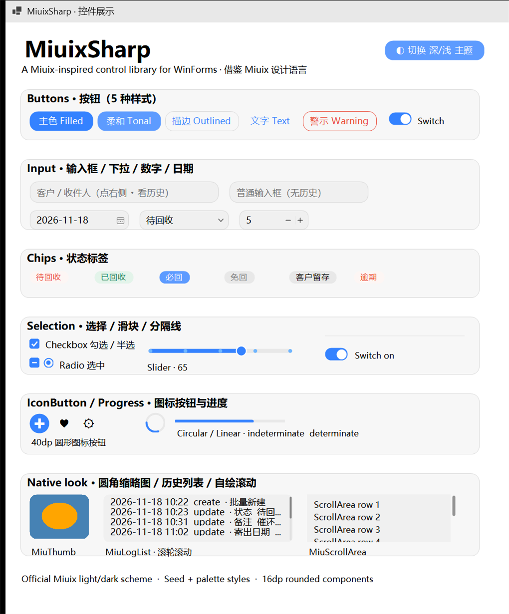
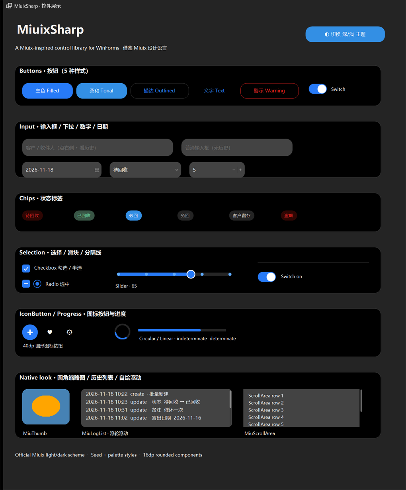

MiuixSharp
用纯 C# 把 Miuix 的视觉设计语言搬进 WinForms：圆角容器、分层灰面、单一强调色，51 个具名颜色角色与 14 种文字样式，全部照着官方规格独立写就。
非官方项目。Miuix 是 Kotlin / Jetpack Compose 库，无法在 .NET 中引用；这里的每一行 C# 都是照着文档里的视觉规格重写的，没有搬运源码。设计与署名归 Miuix 作者所有。


两张都是示例程序 samples/MiuixSharp.Showcase 的真实窗口截图，右上角的按钮在运行中就能切深浅色。点图可看 1020×1230 原图。
控件分成三族
这个库不是“把 WinForms 控件换皮”，而是按“Miuix 有没有对应物”分成三族。分族决定了每个控件的基类，也决定了它以后能不能被删。
第一族 · 官方有对应物，直接复刻
14对应 Miuix 里有文档、有默认值的组件，度量逐项照抄：按钮高 40dp、卡片圆角 16dp、滑块 28dp、分隔线 0.75dp。
第二族 · 有语义、WinForms 没有，推导出来的输入族
6Miuix 的文本输入是一个圆角容器，下拉 / 日期 / 数字都是它的变体；WinForms 里这是四个各有方角的控件。所以外壳与编辑器分离：一个 MiuField 壳 + 四种编辑器。
第三族 · Windows 特有的“系统外观”，只能替换掉
5Miuix 里完全没有对应物 —— 它们是平台问题，不是设计问题：系统滚动条的方角箭头、标题栏的 DWM 配色、DataGridView 抢走的光标、PictureBox 的黑角。
配色是照抄的，不是调出来的
51 个具名角色，浅深各一套，值逐项取自 Miuix 官方 docs/guide/colors.md。下面这些色块会跟着右上角的开关实时变化 —— 换的就是库里那套值。
| 角色 | 色块 | 浅色 | 深色 | 用途 |
|---|---|---|---|---|
| primary | #3482FF | #277AF7 | 强调色 | |
| primaryContainer | #5D9BFF | #338FE4 | 柔和按钮 | |
| background | #FFFFFF | #242424 | 页面底 | |
| surface | #F7F7F7 | #000000 | 卡片底 | |
| surfaceContainer | #FFFFFF | #242424 | 卡片/弹层 | |
| secondaryContainer | #F0F0F0 | #434343 | 输入框底 | |
| onSurface | #000000 | #F2F2F2 | 正文 | |
| outline | #D9D9D9 | #404040 | 描边 | |
| dividerLine | #E0E0E0 | #393939 | 分隔线 | |
| error | #E94634 | #F12522 | 警示琥珀 | |
| disabledOnSurface | #B2B2B2 | #666666 | 禁用文字 | |
| sliderBackground | #0F000000 | #26FFFFFF | 滑块底轨 |
上面 12 个是最常用的角色，仓库里一共 51 个（含 hover / pressed / pressedContainer 等状态色）。全库唯一的“彩色”是 primary 一族 —— 想换品牌色只设一个种子色，其余明度阶梯自动派生，但永远只有一个强调色。
度量是 dp，不是像素
Miuix 的度量单位是 dp。WinForms 画的是设备像素，所以换算只在绘制那一刻发生 —— 这样换台显示器、换个缩放比例，圆角和字才对得上，而不是被系统拉伸成糊的位图。
| 项 | 规则 |
|---|---|
| 基准 | 96 dpi = 1.0，就是截图的样子 |
| 范围 | 1.0 – 5.0（100% – 500%） |
| 取整 | 四舍五入，下限 1px |
| 线宽 | 下限 0.75px，0.75dp 分隔线不消失 |
| 字体 | 用 pt，由系统随 DPI 放大 |
| 窗口 | 尺寸也按 dp 给，否则 150% 下内容撑破窗口 |
| 跟随 | MiuDpi.Watch(form) 挂 DpiChanged |
| 缩放 | 低于 1.0 不提供：Windows 本身也做不到 |
拖动看 16dp 圆角、40dp 按钮高度、字一起等比变化 —— 库里的 MiuTheme.Dp() 做的就是这件事。
跑在 Windows 上，不是跑在截图里
换台机器、开高对比、只用键盘、把控件拖进设计器 —— 这些场景都有对应处理，而不是只有一张好看的截图。
键盘与读屏可用
按钮、勾选、单选、开关、滑块都能 Tab 聚焦，空格或方向键直接操作，自绘控件上也会画焦点框；各自挂了 AccessibleRole，滑块还向读屏报当前值。
跟随系统高对比
RespectSystemHighContrast 默认开启：检测到高对比主题就把整套角色映射到 SystemColors，切换即时生效，不用重启程序。
设计器里认得出
22 个控件各带 16×16 工具箱图标、Description 和默认事件（按钮 Click、勾选 CheckedChanged、滑块 ValueChanged），拖进工具箱不是一排空白方块。
系统集成
AccentSource = System 按 Windows 强调色重新派生色阶；MiuBackdrop 给窗口加深色标题栏与圆角；DPI 变化时度量就地重算，不用重建控件。
它不是什么
这条线在仓库里写在明处：做不到的不假装实现，判定不做的不偷偷做一半。
不是 Miuix 的 C# 移植
Miuix 是 Kotlin / Compose，跑不到 .NET 上。这里每行 C# 都是照视觉规格独立写的。
不是完整 UI 框架
没有布局引擎、没有导航栈。只做“把 WinForms 控件换成 Miuix 长相”的替换件集合。
不做毛玻璃
Glass 系列要 SetWindowCompositionAttribute，兼容性差。仓库里明确写“有意不做”，而不是做个假的。
没有 Preference 组件
设置页要自己用 Card + Switch 拼。加一层 API 价值不高，不如不加。
接入只要一个引用
零第三方依赖，不用图标字体，全部 GDI+ 手绘。目标是 .NET 8 / 6 + WinForms，同一份源码双目标编译。
# 编译 DLL dotnet build -c Release src/MiuixSharp/MiuixSharp.csproj <!-- 或者在项目里直接引用 --> <ItemGroup> <ProjectReference Include="..\_miuixsharp\src\MiuixSharp\MiuixSharp.csproj" /> </ItemGroup>
写代码时记住两条：颜色只在 OnPaint 里读 MiuTheme.Colors；半径和线宽一律走 MiuTheme.Dp()。